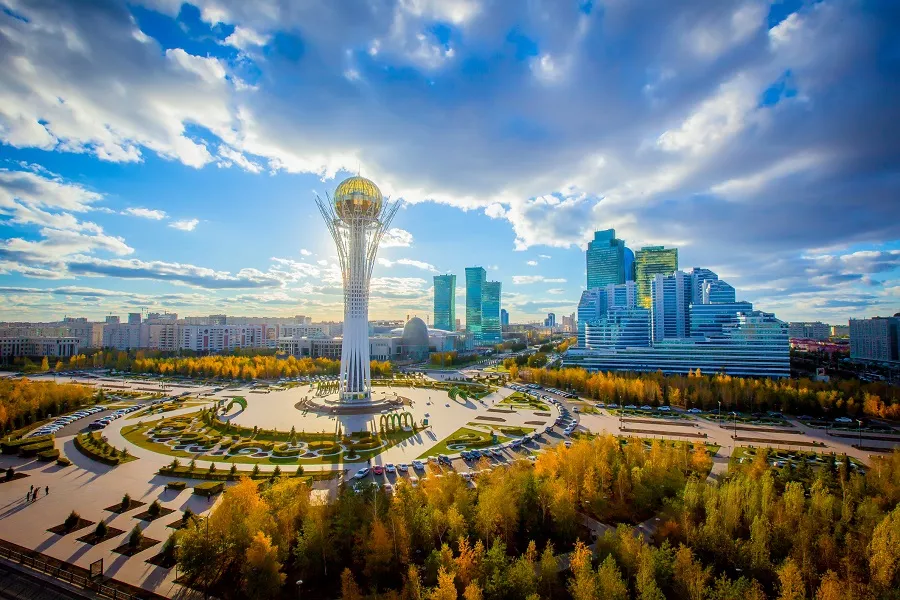

バイテレク
バイテレクは首都の象徴であり、高さ97メートルの塔は1997年の首都移転を記念して建設された。最上階には展望台があり、アスタナの現代的な中心街を一望できる。内部には「黄金の手形」があり、幸運を願って手を当てることができる。
バイテレクは首都の象徴であり、高さ97メートルの塔は1997年の首都移転を記念して建設された。最上階には展望台があり、アスタナの現代的な中心街を一望できる。内部には「黄金の手形」があり、幸運を願って手を当てることができる。
ハン・シャティールは巨大なテントの形をしたユニークな商業・娯楽センターで、建築家ノーマン・フォスターによって設計された。特殊素材の透明ドームに覆われ、一年中快適な気候が保たれている。内部にはショップ、カフェ、アトラクション、さらには砂浜付きのビーチまである。
ハズレト・スルタン・モスクはカザフスタン最大のモスクで、2012年に開かれた。白い建物に青いドームとミナレットが特徴で、首都の精神的な象徴となっている。最大1万人の信者を収容でき、独立宮殿や「カザフ・エリ」記念碑とともに重要な建築群を形成している。